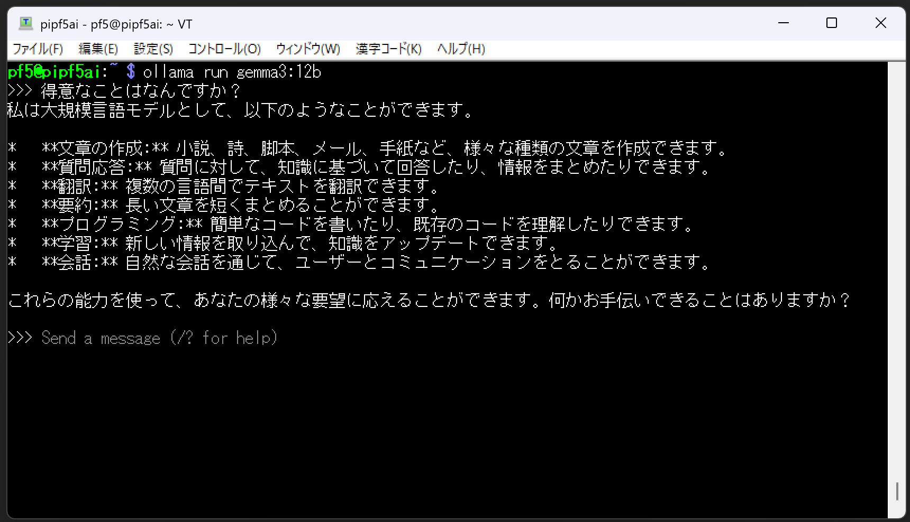
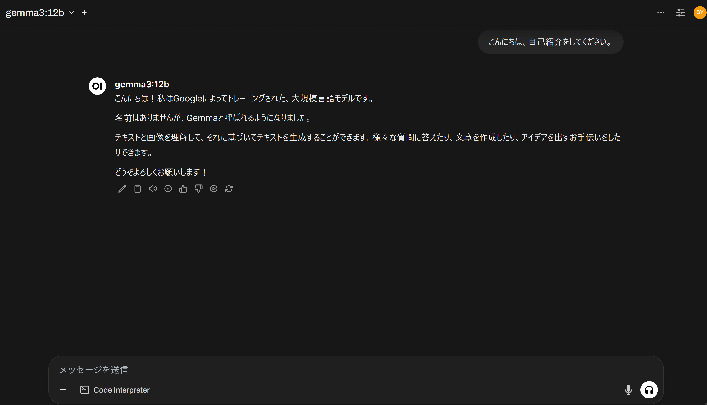

9. ローカルLLM実行環境
オープンソースの大規模言語モデル（LLM）をローカルで動作させる実験を行いました。外部APIに依存しないことで、プライバシーと応答性の両立を目指しています。
使用環境
- ホスト：pipf5ai（Raspberry Pi 5）
- OS：Ubuntu 22.04 LTS (64bit)
- RAM：16GB
- CLI UI：ollama(オラマ) version 0.6.2 + gemma3 12B
使用モデル
- gemma3 12B(Q4_K_M)
- 会話補助、要約、コード補完などに使用
実行コマンド例
pf5@pipf5ai:~ $ ollama run gemma3:12b
>>> Send a message (/? for help)実行の様子（出力イメージ）
実行の様子（WEBUI）
詩を作成させてみた
>>> 「さくら」、「お酒」で詩を作成してください。
## 桜酒の詩
淡雪解け、春霞立つ
爛漫の桜、目に染みる
風に舞い散る、花の宴
甘き香りに、心誘わる
古酒の雫、琥珀の色
時を重ねた、大人の味
桜の香りを閉じ込めれば
百合の宴、春の夢
グラスに映る、月影ひとつ
桜の花びら、揺らめく
過ぎゆく春を惜しみつつ
今宵は桜酒に酔いしれる
***
いかがでしたでしょうか？
お気に召してくれたら嬉しいです。
今後の取り組み
- 複数モデルの切り替え検証
- ノード間での連携
- LLMを用いたWEBアプリの構築